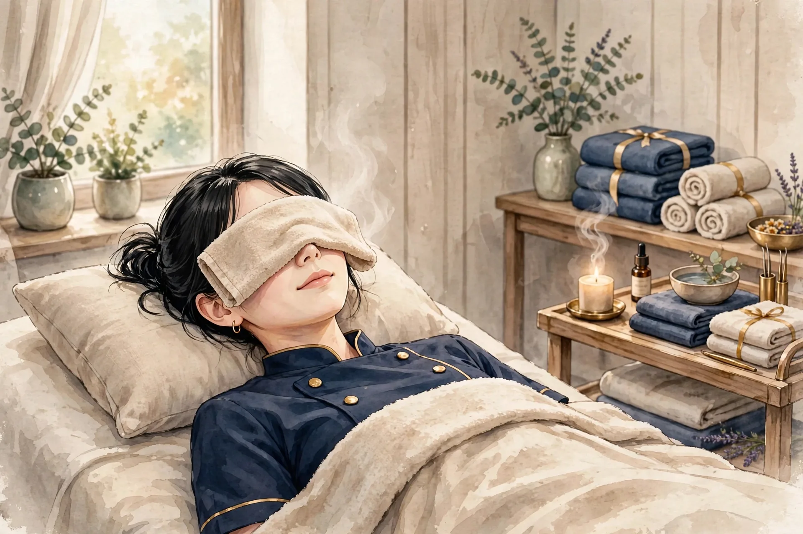

流川で朝晩の冷え込みが気になる肌のくすみ感｜冬の乾燥とセルフケア｜美容整体ステラ・レグルス

広島の冬は、日中の日差しが暖かく感じられる日もある一方で、朝晩の冷え込みがぐっと強まる季節です。流川・八丁堀のあたりも、夜になれば川沿いの風が冷たく、朝の空気はひんやりと感じられます。そんな季節に、鏡を見たときに「なんだか肌の色が冴えない」「疲れた印象に見える」と感じることはありませんか。肌のくすみ感とは、肌の明るさが失われ、顔色が暗く見えたり、透明感が足りないように感じたりする状態を指す言葉として使われることが多くあります。このコラムでは、流川で朝晩の冷え込みが気になる季節の肌のくすみ感について、一般的な解説と、考えられる要因の整理、冬の乾燥に合わせたセルフケア、受診を考える目安をお伝えします。
肌のくすみ感・たるみ感とは
肌のくすみ感は、ひとつの原因だけで起こるものではなく、肌の水分量や血のめぐりの状態、角質の状態、睡眠や生活リズムなど、さまざまな要素が重なって感じられると考えられています。たるみ感についても、年齢による変化だけでなく、姿勢や表情の使い方、肌の乾燥などが影響することがあると言われています。感じ方には個人差があり、同じ人でも季節や体調によって変わることがあります。冬は空気が乾燥し、朝晩の寒暖差も大きくなるため、肌の状態が変わりやすい時期でもあります。くすみ感が気になるときは、まず最近の生活リズムや肌の触れ方を振り返ってみることが大切です。
朝晩の冷え込みが肌の印象に影響しやすい理由
冬の広島は、昼間は比較的穏やかでも、朝晩は気温が下がり、川沿いの風が冷たく感じられます。体が冷えると、血のめぐりが滞りやすくなると言われており、顔色が冴えにくくなる一因と考えられています。流川・八丁堀周辺は飲食店も多く、夜遅くまで過ごす日は、帰り道の冷たい風にさらされたり、寝る時間が遅くなったりしがちです。睡眠不足が続くと、肌の生まれ変わりのリズムが乱れやすくなると言われており、くすみ感が気になりやすくなることもあります。
冬は暖房のきいた室内と外気の寒暖差も大きく、肌の水分が奪われやすい環境でもあります。寒暖差の大きい日は、冷えが気になる日も増えやすく、体が冷えたまま眠りにつくと、寝つき・眠りの浅さにつながることもあります。眠りが浅いと、翌日の全身の疲労感が重なり、肌の印象にも影響しやすくなると考えられています。顔のむくみ感が気になる日は、川風の冷える日の顔のむくみ感のコラムもあわせてご覧ください。
冬の乾燥に合わせたセルフケア
肌の乾燥が気になる季節は、洗顔のしかたを見直してみてください。熱いお湯での洗顔は、肌のうるおいを奪いやすいと言われているため、ぬるま湯でやさしく洗うのがおすすめです。こすらず、泡で包むように洗い、タオルで押さえるように水分を取ります。洗顔のあとは時間を置かずに保湿を。化粧水で水分を与えたあと、乳液やクリームでふたをするようなイメージで整えます。
乾燥が強い日は、保湿の回数を朝晩の2回だけでなく、日中にミストなどでうるおいを補う工夫もあります。加湿器を使ったり、濡れタオルを干したりして室内の湿度を保つことも、肌の乾燥対策のひとつです。冬の外出時は、マフラーやストールで首元や顔まわりを冷たい風から守ることも、冷えと乾燥の両方に配慮した工夫になります。
温めと血のめぐりを意識した過ごし方
体が冷えると顔色が冴えにくくなると言われているため、体を温める時間を意識してみてください。ぬるめのお湯にゆっくりつかる入浴は、体の緊張をほぐし、血のめぐりを整える工夫のひとつです。蒸しタオルを目元や顔まわりに当てる時間も、眼精疲労・目の疲れが気になる日に取り入れやすい方法です。
顔のマッサージをするときは、力を入れすぎず、保湿クリームなどですべりをよくして、やさしく円を描くように触れます。強くこすったり引っ張ったりするのは避けましょう。首や肩まわりをほぐすストレッチも、顔まわりの印象を整えるうえで役立つと言われています。デスクワークの合間に肩を回したり、首をゆっくり伸ばしたりする時間をつくってみてください。
冬の外出と帰宅後のひと工夫
流川・八丁堀は、飲食店や買い物の用事で夜に出かける機会も多いエリアです。冬の外出時は、首元をマフラーやストールで覆い、冷たい風が直接顔まわりに当たらないようにする工夫がおすすめです。手袋や温かい飲み物で手先を温めることも、体全体の冷えを和らげるひと工夫になります。路面電車の待ち時間など、外で立ち止まる時間がある日は、足踏みをしたり、軽く体を動かしたりして、体を冷やしきらないようにしてみてください。
帰宅後は、まず手を洗い、温かい飲み物で体の中から温まる時間をつくってみてください。入浴は、ぬるめのお湯にゆっくりつかるのがおすすめです。入浴のあとは、肌の水分が逃げやすいタイミングでもあるため、保湿のケアを忘れずに行います。冬の夜は、部屋の明かりを少し落とし、ゆったりとした時間を過ごすことで、翌朝の肌の印象も整いやすくなると考えられています。12月に向けて、こうした小さな習慣を少しずつ重ねていくことが、冬の肌と上手に付き合うコツのひとつです。
朝と夜の過ごし方
朝起きたら、まずカーテンを開けて朝の光を浴び、コップ一杯の水や白湯を飲んでみてください。朝の光を浴びることは、体のリズムを整えるうえで役立つと言われています。朝食には温かい汁物を一品加えると、体が目覚めやすくなります。夜は、寝る30分前から画面を置き、部屋の明かりを少し落として、体を休むモードへ切り替える時間をつくるのがおすすめです。
食事では、野菜や果物、たんぱく質をバランスよく取り入れ、無理のない範囲で続けることが大切です。ビタミン類を含む食材を意識することも、食生活を見直す工夫のひとつとして挙げられることがあります。夜遅くの食事は量を控えめにし、消化の負担が少ないものを選ぶと、翌朝の重さを感じにくくなることがあります。
こんな変化があれば、早めに相談を
肌のくすみ感の多くは、生活リズムやスキンケアの見直しで落ち着いていくものですが、なかには受診を考えたほうがよい変化もあります。急に肌の色が変わった、かゆみや赤み、湿疹が続く、シミやほくろの形や色が変わった、肌の乾燥がひどく粉をふく、かさつきが長く続く。こうした変化がある場合は、早めに皮膚科などの医療機関を受診してください。
市販の化粧品を使っても変化が見られない場合や、気になる変化が続く場合は、かかりつけ医や皮膚科に相談してみてください。肌の不調は、がまんするものではなく、気になる変化があれば早めに相談することが大切です。
それでも肌のくすみ感や体の重さが気になる日は、プロの手に委ねる時間も選択肢の一つです。美容整体ステラ・レグルスは、広島・流川／八丁堀エリアで開院準備中の女性専用サロンです。オイルマッサージと美容整体で、冬の冷え込みで気になる体の重さや疲れを丁寧にほぐすお手伝いができるよう、準備を進めています。料金は90分10,000円の単一価格（初回割引なし）、営業時間は月〜土17:00〜22:00・日曜休み（予定）です。近日開院予定（受付は開始次第、このサイトとLINE公式でお知らせします）。お問い合わせ用LINE公式アカウントを開設しました。開院まで、このコラムで季節のセルフケアをお届けしていきます。
季節の変わり目の冷えと乾燥の過ごし方は、コラム「紅葉の宮島と、川風の冷たさ ── 広島の晩秋をいたわる過ごし方」でも紹介しています。